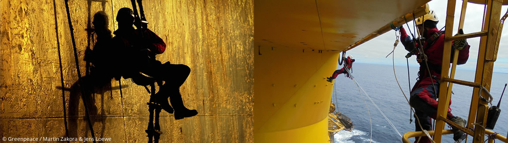
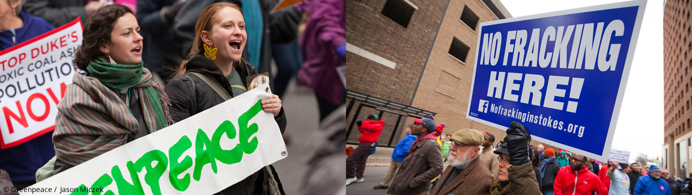
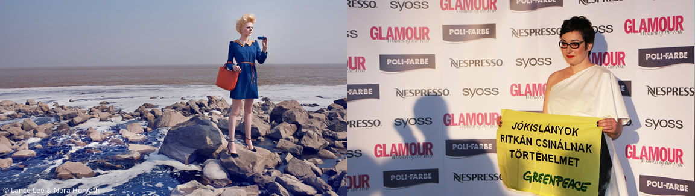
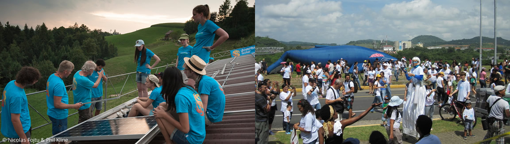
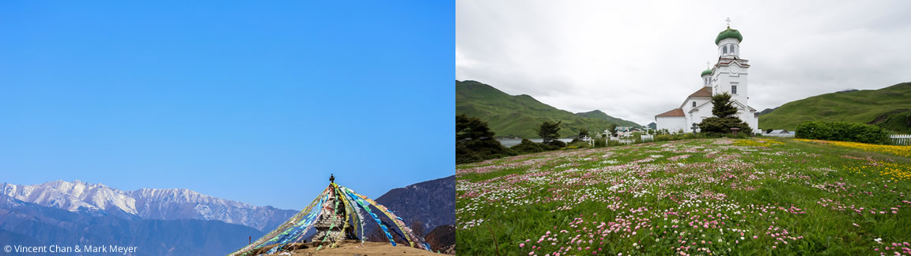

6 Kinds of Courage
Physical Courage
"Hollywood, as everyone knows, glamorises physical courage…if I had to define courage myself, I wouldn't say it's about shooting people. I'd say it's the quality that stimulates people, that enables them to move ahead, and look beyond themselves."– Clint Eastwood, actor/director
This is the courage that probably comes first to mind. It's the kind that involves physical pain or endurance, where we might risk bodily harm or death to achieve a goal. Hollywood, as one of our principal storytellers in modern culture, abounds with tales of physical courage and mastery over the physical world and all within it. We celebrate the power of physical courage in superhero, action and adventure movies; it garners awe and respect, and tends to be associated with traditional notions of the 'masculine'. People who display physical courage in our culture are readily called 'heroes'. Here, the body is the physical boundary between Comfort Zone and what lies outside, and pain is our bodies' way of telling us in no uncertain terms where our limits are. In some situations, there are things more important than fear of pain, and our physical fear becomes a border we might attempt to cross for a greater purpose.
There are a host of expressions of physical courage. The athlete who pushes her physical limits to rise to top of her field, or best herself. The refugee who leaves home behind and enters the sea in a rickety boat with loved ones towards life. The activist standing boldly in the path of a tank in a political or moral act. The soldier who races into a hail of bullets to save a comrade in arms from certain death. The choice to undergo long, hard months of chemotherapy. The child learning to swim, tentatively slipping a toe into the deep end of the pool for the first time. Physical courage undeniably reminds us in the moment that our bodies are how we navigate, explore and engage with the world. Wholehearted activists know we need to carefully support its health and resilience to prepare us to face all kinds of joys and challenges throughout our lives.
Moral Courage
"Have the courage to say no. Have the courage to face the truth. Do the right thing because it is right. These are the magic keys to living your life with integrity."- W. Clement Stone
This is the stuff that makes the social justice world go around. We know it when we see it and we know when it's missing in action. Moral courage arises from how our internal integrity compass translates into our behaviour in the world. It is standing in our integrity and acting from our values, what we know to be right, even at the risk of our social status or tarnishing our “rep”. Even when it might be inconvenient, expose us to ridicule, punishment, and the wrath of others. Moral courage asks us to rise above cynicism, apathy, the false 'us/them', 'wrong/right' divides, intolerance, judgement, and our apparent differences, and what the world looks like today in order to envision what it could be. It calls our bluff every time we say we want a better world and we keep doing the same things over and over. It calls for daring honesty. It's what we need to answer the summons of our purpose.
Moral courage can take many forms: the whistleblower who risks job loss to expose wrongdoing by an employer. When we probe to understand the 'why' behind the what of a friend's arguments instead of dismissing them as 'wrong'. The CEO who dares to go against prevailing business wisdom in the name of social good. When we keep someone's confidence. When we hold others accountable for their actions takes moral courage, of us and of them.
Moral courage is about leading from a place of honestly, authenticity, empathy, and compassion. It invites us to honour our intuition, align what we know to be true with how we live our lives. Moral courage pushes us to make conscious decisions about what kind of attitudes and behaviours reflect the highest versions of our selves and who we aspire to be, and which ones diminish us. It beckons us to engage our wild imagination, limitless creativity, and unabashed wonder in the service of building a more beautiful world and then doing what it takes to get there.
Social Courage
"To be yourself in a world that is constantly trying to make you something else is the greatest accomplishment."– Ralph Waldo Emerson
Social courage is anathema to the ego. It's daring to be seen, heard and accepted as we are, not perform, perfect and please. The courage to be 'real' is often an act of resistance against the tyranny of the 'Shoulds': who we should love, what career we should take, how we should behave, what opinions we should have, how we should feel, what we should do, how we should dress, parent, live and lead. Social courage invites us to delve within, bravely call out our broken stories, cease with inflicting 'Shoulds' on ourselves and others.
We see social courage when someone with a personal style or talent owns it, and by doing that, makes room for others to shine. When a colleague stands up for a peer in a meeting who isn't being seen or heard. When a friend risks ruining a perfectly civil dinner conversation to challenge a bigoted comment. When an organisation declares a move to innovate despite fear of failure. When we call out another person's success and laud their contributions. When leaders are able to tell the truth that they're still learning. When we take responsibility and apologise openly and sincerely for our mistakes. When we must lovingly say goodbye to an old friend who won't let us change. When we can say 'thank you' in full acceptance of a compliment.
Social courage acknowledges that we can only accept others to the degree that we can accept our selves. It recognises that sometimes the nemesis of courage isn't cowardice, but conformity. It calls on us to buck the ego, rebel against perfectionism, and bring all of our messy, flawed, humanness to the work we're all doing. It asks us to ditch the stories that aren't propelling us forward, and boldly build on the stories that hint at our worth, power and grace.
Emotional Courage

"We need to find the courage to say no to the things and people that are not serving us if we want to rediscover ourselves and live our lives with authenticity."– Dr. Barbara de Angelis, author, psychologist
This is the kind of everyday, moment by moment courage upon which all the other kinds depend, and is the 'heart' in the original meaning of 'courage'. Emotional courage is born from cultivating emotional intelligence and mindfulness. It is about telling the truth to ourselves first about our feelings and not denying our emotions that give us more insight into who we are and what we really need to flourish. Emotional courage asks us to switch off auto-pilot and be conscious of our inner landscape, our unconscious biases, our triggers, our wounds – what Jung called our 'shadows'. Most of our cultural conditioning seems geared to ensure we block and deny our feelings and needs – they're fluffy, selfish, a waste of time – and we often deny our responsibility for them. We blame and judge other people for 'making us [insert feeling here]' instead. Conversing with our shadows requires superhuman levels of patience and self-compassion. And we can only be generous and accepting of others to the degree we can be generous and accepting of ourselves. Nothing determines better what we will become that the things we choose to ignore.
Emotional courage happens when someone steps on one of our landmines and we take a moment to ask, 'wait, what's really going on here?', to feel our emotions and identify what we need in the moment, before choosing an appropriate response. It arises when we're able to be present and empathise with what someone is saying to us without jumping to offer a fix. It's understanding that behind any insults attacks, and judgement, we're all just trying to meet our needs – for inclusion, respect, appreciation, connection - and experience well being. It's daring to throw off the cloak of cool and love something (or someone) enough to risk becoming more than we were before.
Emotional courage dares us to do the truly audacious: to have empathy for ourselves, to love ourselves, to accept who we are, to believe we are worthy of care, happiness and joy. It helps us lean into vulnerability for a more expansive understanding of how we create our world in every moment we're awake, to see how reality is never what we see and experience, but a product of the stories we make up about what we see and experience. It beckons us to be responsible for our stories, for adjusting them when needed, and for making better decisions.
Intellectual Courage
"No pessimist ever discovered the secret of the stars, or sailed to an uncharted land, or opened a new doorway for the human spirit."- Helen Keller
Intellectual courage is what drives curiosity about the world, the willingness to learn, attempt, experiment, even at the risk of failure. It's the part of us that yearns to discover new ways of being, seeing, doing. Intellectual courage takes a devotion to questions, humility, the ability to stay with what we don't know, to keep asking questions and the courage to see the world anew. Sometimes it means going against what we were taught, or What We Know For Sure, being willing to release our assumptions for new insight. Intellectual courage requires us to be critical thinkers, to sit with the vulnerability of uncertainty, being able to admit when we don't know, and being game to find out. It means valuing the journey of learning over the moment of 'winning'. It takes discipline, focus and sometimes, faith. The easier path is cynicism, pessimism, and skepticism – no strangers to anyone attempting the new.
Our media's version of reality says rot is not only more interesting, but more prevalent than splendour. Pessimism is often enshrined as a marker of worldliness. Irony with a hint of the mean is almost chic. Cynicism can sound like authority. Beautiful truths smell suspicious, and ugly ones are readily eaten. Intellectual courage says we don't have the luxury of indulging this triad too often. Hope has hardier wings than fear. Skepticism is healthy but too much can wither the bigness of imagination we need to fuel us onward to a New History.
Intellectual courage looks like attempting to paint for the first time when your old story was 'I'm not creative'. It's being able to hold opposing ideas and disagree with yourself, even when it's uncomfortable. It's daring to learn from those who aren't on our 'approved' list. It's the steadfast belief that Impossible is Inevitable wearing a different mask. It's hunting down and amplifying the stories of triumph, renewal, ingenuity, harmony, and rebalancing by all the Beautiful World-makers who are pushing humanity ever forward, bending the arc of history towards greater justice and peace every day. It's embracing the dance of learn, unlearn, relearn as a constant, enriching and feature of life when the task is to hospice what's dying and midwife what's being born.
Intellectual courage is the courage to confront what can be imagined. It takes freeing ourselves from groupthink, peer pressure, the law of the pack and conventional wisdom; the need to have it all figured out (or appearing to). It's embracing 'I don't know' as a source of power, and a fertile ground to seed the new. Intellectual courage asks us to find where our deepest ambition meets the greatest gift we have to give, and intersects with what the world needs.
Spiritual Courage
"This is my simple religion. There is no need for temples; no need for complicated philosophy. Our own brain, our own heart is our temple; the philosophy is kindness."— His Holiness the Dalai Lama
Who am I? Where did I come from? Where am I going? If you've ever rumbled with the Big Three Questions or had your very own existential crisis, you had to muster some spiritual courage. We prefer the security of things wrapped in a bow, not another question. But we also know that life isn't so tidy, and some matters are inexplicable and call for something else.
Call it what you will: God, the Goddess, the Force, the Universe, the Great Mystery – that thing that brings a sense of perspective, meaning, and interconnectedness with all of Life. Some people find their anchor for spiritual courage and celebrate the sacred in church, mosque, temple, walking in the woods, thirty metres under water with a scuba mask, with a paintbrush and easel, in Downward Dog pose, or meditating in their favorite spot.
Spiritual courage looks like leaning into tough questions even though we realise we may never really have The Answer. It means leaning into our own mortality and embracing Life in all its puzzling complexity and paradox. Spiritual courage asks us to see and honour the divine spark in other human beings (even the ones we don't like). It asks us to look beyond what we see in front of us now for the bigger picture, which we may not yet understand.
A connection with the sacred, however we experience it, helps us draw healthy boundaries for our physical, mental and emotional health, to stay present as much as possible, to put our very human needs first - these are real acts of defiance. We're often so fixated on the world we want to see, on pace, progress and impact, we can fall into the capitalist trap of ceaseless productivity at the cost of our own well being, unwittingly commodifying ourselves and each other in the process, and risking burnout. Spiritual courage is one of the most powerful keys for lifelong activism because cultivating presence and a connection to the sacred helps us find our feet, anchor ourselves and cultivate resilience when everything is in constant flux around us.